<!DOCTYPE html>
<html lang="es">
<head>
    <meta charset="UTF-8">
    <meta name="viewport" content="width=device-width, initial-scale=1.0">
    <title>Serch</title>
    <body style="background-image: url(IMAGES/fondoooooo.jpg);">
    <link rel="icon" href="IMAGES/ICONICON.png">

</body>

<style>
        header{
            /*Hola profesor no olvide darle like y suscribirse*/
                  width: 1920px;
            height: 150px;
            background-color: rgb(13, 42, 65);
            color: rgb(223, 209, 173);
            text-align: center;
            font-size: 140px;
            font-family: Arial, Helvetica, sans-serif;
            margin-top: 20px;
            margin-bottom: 20px;
            margin-left: 20px;
        }
             /* ඞ */
        img{
            text-align: center;
            margin-left: auto;
            margin-right: auto;
            display: block;
        }
        
        .menu{
        padding: 20px;
        position: sticky;
        top: 0;
        background-color: rgb(13, 42, 65);
        text-align: center;
        color: white;
        }

        /*Hice que el logo siempre estuviese bailando en la esquina inferior, espero y que se pegue*/
        .gifcalacoso {
            position: fixed;
            bottom: 20px;    
            right: 20px;    
            z-index: 1000;   
        }
        
        /*NO LO BORRES SON DEL MENU*/
        a{
            text-decoration: none;
            color:rgb(223, 209, 173);
            padding: 14px;
            font-size: 24px;
            font-family: Arial, Helvetica, sans-serif;
        }

   /*esto fue agregado despues del primer parcial */
        .Parcial1{
            width: 1920px;
            height: 100px;
           color: rgb(223, 209, 173);
            background: #0D2A41;          
            border: 7px dotted (223, 209, 173);
            padding: 10px;
            text-align: center;
            font-size: 80px;
            font-family: Arial, Helvetica, sans-serif;
            margin-top: 20px;
            margin-bottom: 20px;
            margin-left: 20px;
             }

         /*encontre esto y no supe si agregarla o no xd */
        .ATAJOS{
            width: 1920px;
            height: 100px;
            background-color: rgb(13, 42, 65);
            color: rgb(223, 209, 173);
            text-align: center;
            font-size: 80px;
            font-family: Arial, Helvetica, sans-serif;
            margin-top: 20px;
            margin-bottom: 20px;
            margin-left: 20px;
        }
 
        /*creo que es de la actividad de la tardis por que obviamente no me puedo callar sobre esta horrible serie*/
        .UXDESIGN{
            width: 1920px;
            height: 100px;
            background-color: rgb(13, 42, 65);
            color: rgb(223, 209, 173);
            text-align: center;
            font-size: 80px;
            font-family: Arial, Helvetica, sans-serif;
            margin-top: 20px;
            margin-bottom: 20px;
            margin-left: 20px;
        }
 
             /*Mi primer pagina web de Hylics, profesor, si usted juega RPGS le recomiendo hylics 2 */
        .lolmemori{
            width: 1920px;
            height: 100px;
            background-color: rgb(13, 42, 65);
            color: rgb(223, 209, 173);
            text-align: center;
            font-size: 80px;
            font-family: Arial, Helvetica, sans-serif;
            margin-top: 20px;
            margin-bottom: 20px;
            margin-left: 20px;
            }

                     /* YA NO SE QUE COMENTAR */
        .undertula{
            width: 1920px;
            height: 100px;
            background-color: rgb(13, 42, 65);
            color: rgb(223, 209, 173);
            text-align: center;
            font-size: 80px;
            font-family: Arial, Helvetica, sans-serif;
            margin-top: 20px;
            margin-bottom: 20px;
            margin-left: 20px;
            }
                         /* por favor que este sea el ultimo comentario */
        .Revista{
            width: 1920px;
            height: 100px;
            background-color: rgb(13, 42, 65);
            color: rgb(223, 209, 173);
            text-align: center;
            font-size: 80px;
            font-family: Arial, Helvetica, sans-serif;
            margin-top: 20px;
            margin-bottom: 20px;
            margin-left: 20px;
            }
                                                         /* no lo fue */
        .Revista2{
            font-family: Arial, Helvetica, sans-serif;
            font-size: 30px;
            color: rgb(13, 42, 65);
            text-align: justify;
            margin-top: 25px;
            margin-bottom: 85px;
            margin-left: 100px;
            margin-right: 370px
            }

        .table{
        font-family: Arial, Helvetica, sans-serif;
        font-size: 20px;
        color: rgb(223, 209, 173);
        text-align: left;
        background-color: rgb(13, 42, 65);
            border: 1px solid rgb(223, 209, 173);
            margin-top: 25px;
            margin-bottom: 85px;
            margin-left: 100px;
            margin-right: 370px
        }
        td{
            border: 1px solid rgb(13, 42, 65);
        }
        th{
            border: 1px solid rgb(13, 42, 65);
        }

        /*Seccion unica para el proyecto de sitio web*/
        .AURA{
            width: 1920px;
            height: 100px;
            background-color: rgb(255,143,158);
            color: rgb(223, 209, 173);
            text-align: center;
            font-size: 80px;
            font-family: Arial, Helvetica, sans-serif;
            margin-top: 20px;
            margin-bottom: 20px;
            margin-left: 20px;
        }


    </style>

<header>
            <div class="header"> ⋆  BITÁCORA  SERCH   ⋆
</div>
    </header>

<body>
  <p id="hora" 
  style="font-size: 42px; text-align: center; font-family: Arial, Helvetica, sans-serif ;font-weight: bolder; color: rgb(13, 42, 65);"></p>
  <script>
    function mostrarHora() {
      let ahora = new Date();
      let hora = ahora.toLocaleTimeString();
      document.getElementById("hora").innerHTML = hora;
    }
    setInterval(mostrarHora, 1000);
    mostrarHora();
  </script>

</html>

<section>
        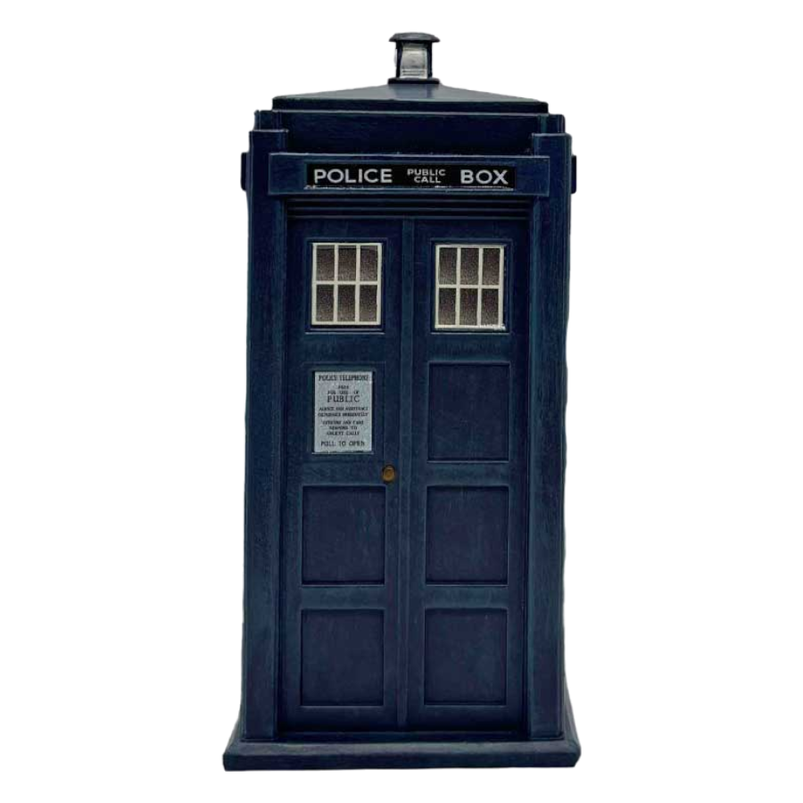
        <article>

  <nav>
     <div class="menu">
    <a href="#DISCO 1">DISCO 1</a>
    <a href="#DISCO 2">DISCO 2</a>
        </div>

      <div class="gifcalacoso">
    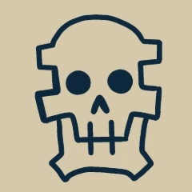
    
  </nav>
      <section id="DISCO 1">
<div class="Parcial1">DISCO 1</div>
    </div>

    <section>
        
 
   </section>
    <div class="ATAJOS">⋆｡𖦹° ACTIVIDAD 1 °𖦹｡⋆</div>
    <div class="ATAJOS"> Atajos para macOS  </div>
    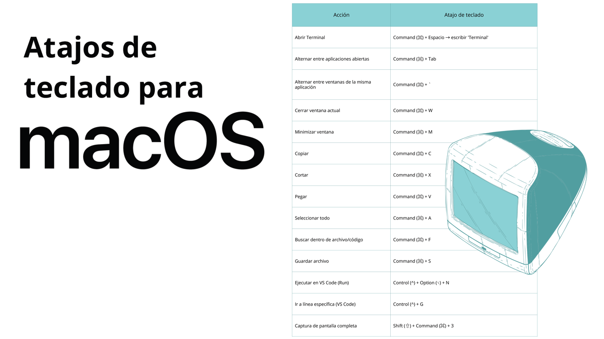
    </div>
 
    </section>
    <div class="UXDESIGN">⋆｡𖦹° ACTIVIDAD 2 °𖦹｡⋆</div>
    <div class="UXDESIGN"> Gráfico de conceptos básicos </div>
    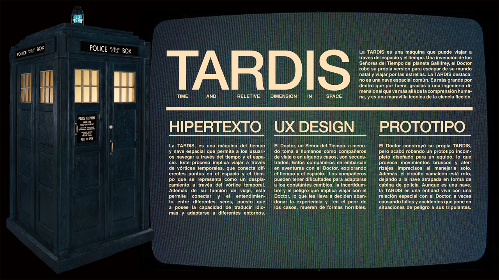
    </div>
 
    </section>
    <div class="UXDESIGN">⋆｡𖦹° ACTIVIDAD 3 °𖦹｡⋆</div>
    <div class="UXDESIGN"> Recreación en FIGMA </div>
    
    </div>
 
</section>
    <div class="UXDESIGN">⋆｡𖦹° ACTIVIDAD 4 °𖦹｡⋆</div>
     <div class="UXDESIGN"> Mapa conceptual DOM </div>
    </section>
        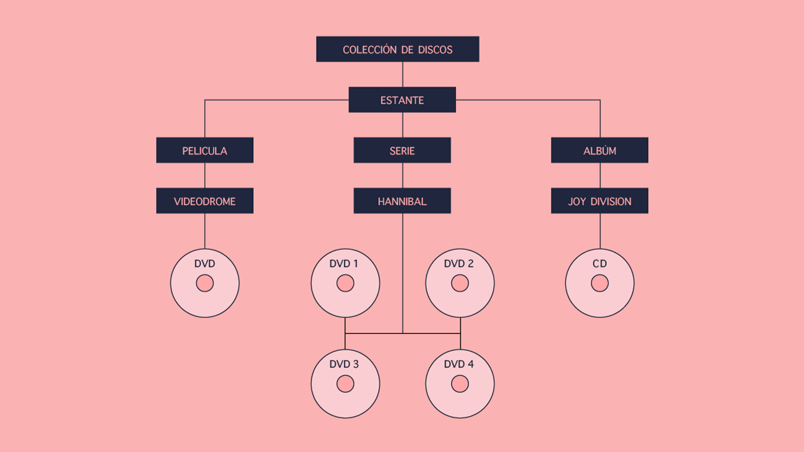
    </div>
 
  </section>
    <div class="lolmemori">⋆｡𖦹° ACTIVIDAD 5 °𖦹｡⋆</div>
    <div class="lolmemori"> Mi primer página web </div>
    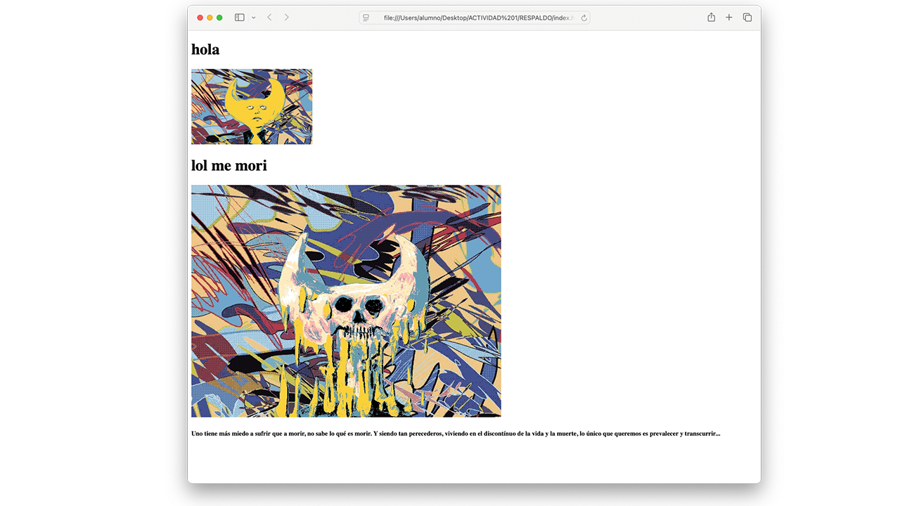
    </div>

<iframe width="560" height="315" 
  src="https://www.youtube.com/embed/mBDBAqIs5sE?si=QYJ-Yv2N_iPuIDJG" 
  title="Video explicando mi primer pagina web" frameborder="0" 
  allow="accelerometer; autoplay; clipboard-write; encrypted-media; gyroscope; picture-in-picture; web-share" 
  referrerpolicy="strict-origin-when-cross-origin" allowfullscreen
  style="display: block; margin: 0 auto;">
</iframe>
    
      </section>
    <div class="UXDESIGN">⋆｡𖦹° ACTIVIDAD 6 °𖦹｡⋆</div>
    <div class="UXDESIGN"> Diagrama despotricando </div>
    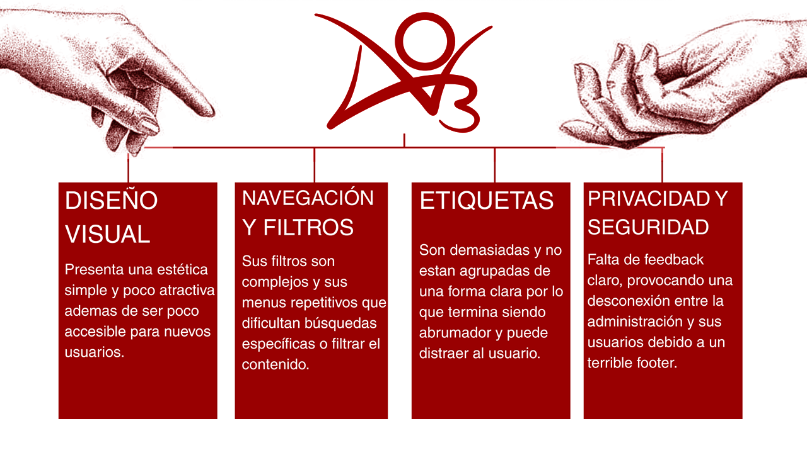
    </div>
 
</section>
    <div class="undertula">⋆｡𖦹° ACTIVIDAD 7 °𖦹｡⋆</div>
    <div class="undertula"> Diagrama de flujo </div>
    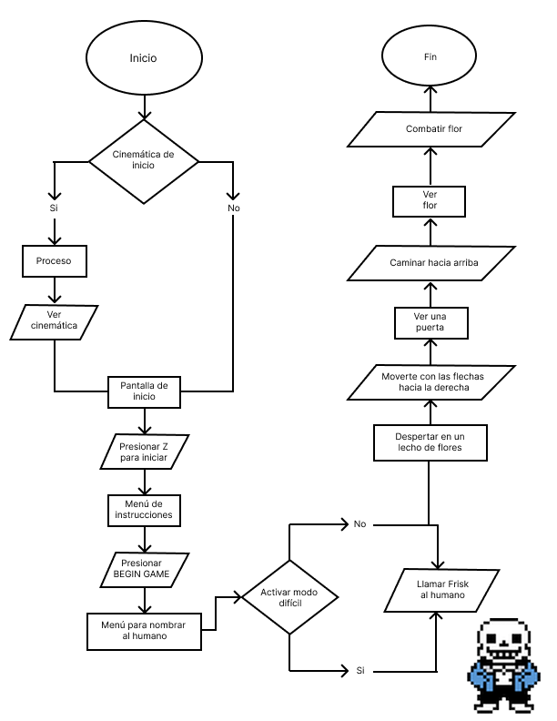
    </div>
 
    </section>
    <div class="UXDESIGN"> Diagrama de esta pagina web</div>
    
    </div>
 
</section>
    <div class="Revista">⋆｡𖦹° REVISTA °𖦹｡⋆</div>
    </div>

 </style>

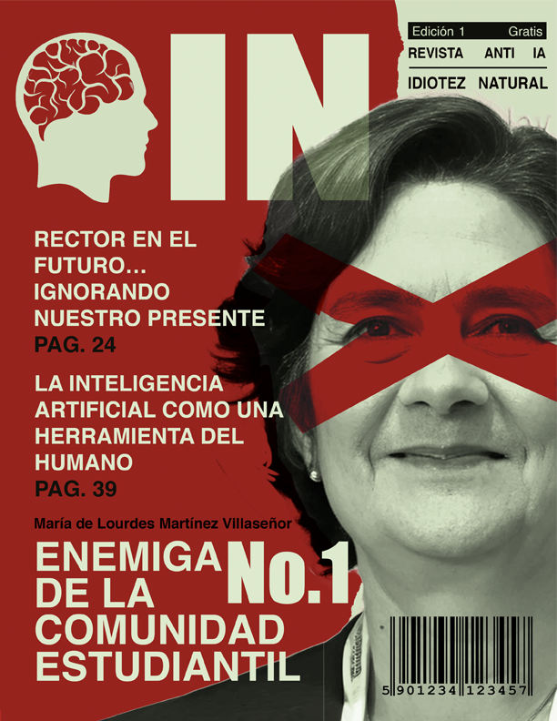
<p class="Revista2">
  Como estudiante de diseño y artista, creo que la conferencia de Inteligencia Artificial en la UACJ careció de humanidad. Nuestro rector abrazó a un robot, pero no mostró interés por los problemas reales del estudiantado.

Aunque estas charlas eran necesarias, en lugar de inspirar, generaron miedo y dudas sobre nuestro futuro. El temor y la ignorancia pueden llevar al rechazo y al odio, y esta no es la manera de enfrentar el progreso.

Dividir las conferencias por áreas fue adecuado, pero la voz del avance fue entregada a personas con una visión sesgada, centrada en la automatización para unos pocos. Profesores y expertos internos podrían ofrecer perspectivas más amplias y responsables.

Aun así, estas conferencias pueden ser un inicio positivo si se abordan con humanidad y ética. La tecnología no es una amenaza, sino una herramienta para expandir nuestras capacidades y abrir nuevas oportunidades, siempre que aprendamos a usarla con conciencia y esperanza.
</p>
    </div>

      <section id="DISCO 2">
    <div class="ATAJOS">DISCO 2</div>
    </div>
        <section>
        

    </section>
    <div class="undertula">⋆｡𖦹° ACTIVIDAD 1 °𖦹｡⋆</div>
    <div class="undertula"> BOCETOS </div>
    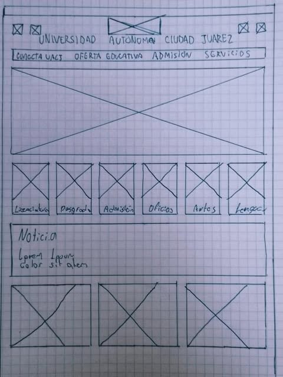
    </div>

   </section>
       <div class="UXDESIGN"> ⋆｡𖦹° ACTIVIDAD 2 °𖦹｡⋆</div>
    <div class="UXDESIGN"> Wireframes de baja fidelidad</div>
    
    </div>    

     </section>
    <div class="undertula"> Wireframes de alta fidelidad </div>
    
    </div>

 </section>
    <div class="UXDESIGN"> Propuesta en mockup </div>
         
    </div>    

     </section>
       <div class="UXDESIGN"> ⋆｡𖦹° ACTIVIDAD 3 °𖦹｡⋆</div>
    <div class="UXDESIGN"> Mapa de este sitio </div>
    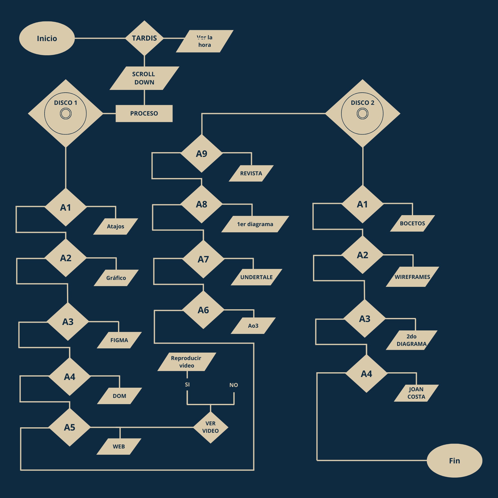
    </div>    

    </section>
    <div class="undertula">⋆｡𖦹° ACTIVIDAD 4 °𖦹｡⋆</div>
    <div class="undertula"> Gráfico de Joan Costa </div>
    
    </div>

     </section>
       <div class="UXDESIGN"> ⋆｡𖦹° Logo retículado °𖦹｡⋆</div>
    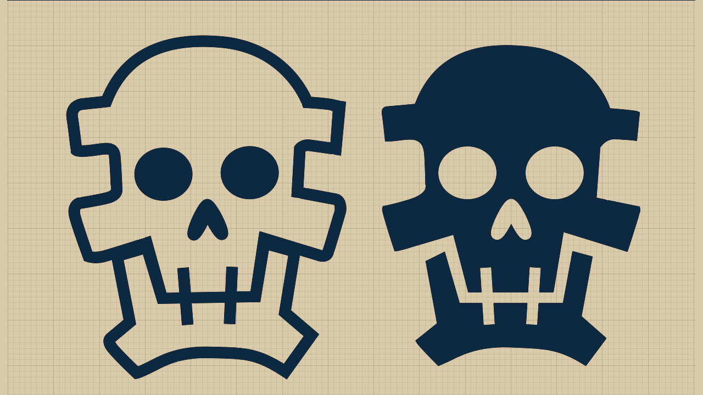
    </div>    

         </section>
       <div class="UXDESIGN"> ⋆｡𖦹° Logo con retícula de IOS °𖦹｡⋆</div>
    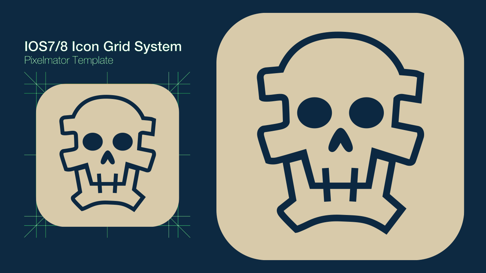
    </div>    

            </section>
       <div class="UXDESIGN"> ⋆｡𖦹° FAVICON °𖦹｡⋆</div>
    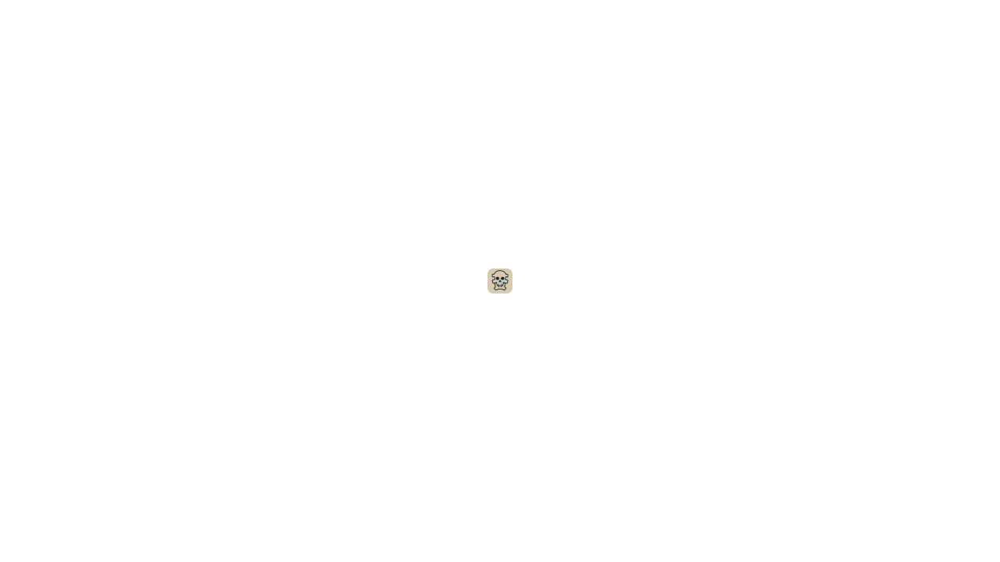
    </div>    

           </section>
       <div class="UXDESIGN"> TABLA </div>
   /*Honestamente es una excusa para actualizar mi lista de peliculas en DvD*/
 </div>

   <center>
     <table class="table">
         <th>NOMBRE</th>
      <th>DURACIÓN</th>
      <th>DISCOS</th>
      <th>ESTRENO</th>
    </tr>
    <tr><td>The Seventh Seal</td><td>96 min</td><td>1</td><td>1957</td></tr>
    <tr><td>The Birds</td><td>119 min</td><td>1</td><td>1963</td></tr>
    <tr><td>Reservoir Dogs</td><td>99 min</td><td>2</td><td>1992</td></tr>
    <tr><td>Clueless</td><td>97 min</td><td>2</td><td>1995</td></tr>
    <tr><td>The Matrix</td><td>136 min</td><td>1</td><td>1999</td></tr>
    <tr><td>American Beauty</td><td>122 min</td><td>1</td><td>1999</td></tr>
    <tr><td>Girl, Interrupted</td><td>127 min</td><td>1</td><td>1999</td></tr>
    <tr><td>The Sixth Sense</td><td>107 min</td><td>1</td><td>1999</td></tr>
    <tr><td>The Animatrix</td><td>102 min</td><td>1</td><td>2003</td></tr>
    <tr><td>Lost in Translation</td><td>102 min</td><td>1</td><td>2003</td></tr>
    <tr><td>Big Fish</td><td>125 min</td><td>1</td><td>2003</td></tr>
    <tr><td>Eternal Sunshine of the Spotless Mind </td><td>108 min</td><td>1</td><td>2004</td></tr>
    <tr><td>Mean Girls</td><td>97 min</td><td>2</td><td>2004</td></tr>
    <tr><td>Napoleon Dynamite</td><td>95 min</td><td>2</td><td>2004</td></tr>
    <tr><td>Kung Fu Hustle</td><td>98 min</td><td>1</td><td>2004</td></tr>
    <tr><td>The Life Aquatic with Steve Zissou</td><td>118 min</td><td>1</td><td>2004</td></tr>
    <tr><td>Zoolander</td><td>89 min</td><td>1</td><td>2001</td></tr>
    <tr><td>Cowboy Bebop: The Movie</td><td>115 min</td><td>1</td><td>2001</td></tr>
    <tr><td>Borat</td><td>84 min</td><td>1</td><td>2006</td></tr>
    <tr><td>Juno</td><td>96 min</td><td>1</td><td>2007</td></tr>
    <tr><td>Madagascar: Escape 2 Africa</td><td>89 min</td><td>1</td><td>2008</td></tr>
    <tr><td>Doctor Who: The Return of Doctor Mysterio   </td><td>60 min</td><td>1</td><td>2016</td></tr>
    <tr><td>Knives Out</td><td>130 min</td><td>1</td><td>2019</td></tr>
    <tr><td>Morbius</td><td>104 min</td><td>1</td><td>2022</td></tr>
  </table>
    </center>

      </section>
       <div class="AURA"> Diseño de una página </div>
    
    </div>  

  <center>
    <table cellspacing="20">

      <!-- Fila superior: imágenes cuadradas -->
      <tr>
        <td align="center">
            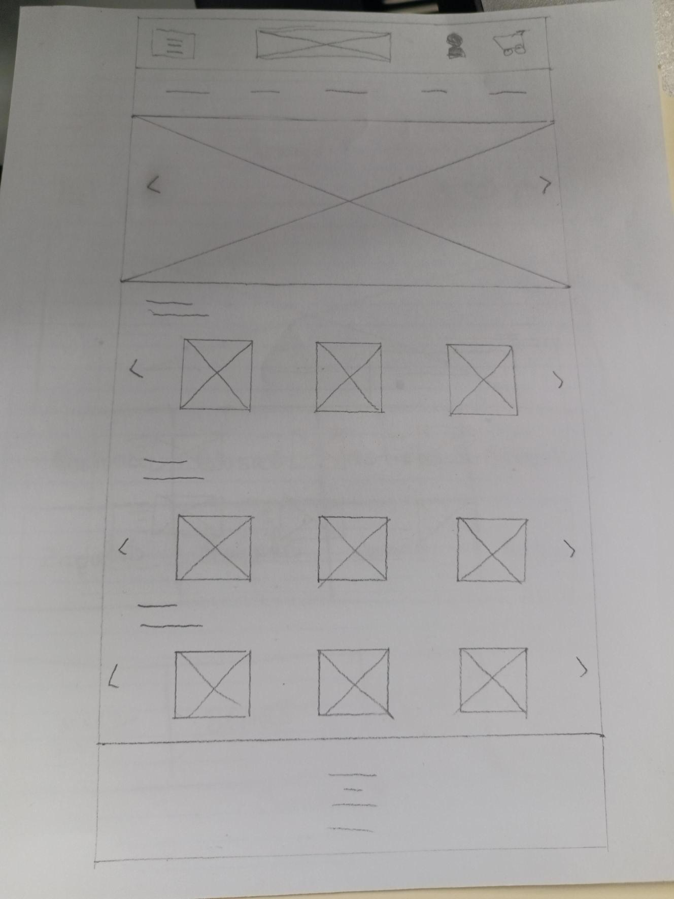
          </a><br>
          <span style="font-family: Helvetica; font-size: 14px;">Boceto</span>
        </td>
        <td align="center">
            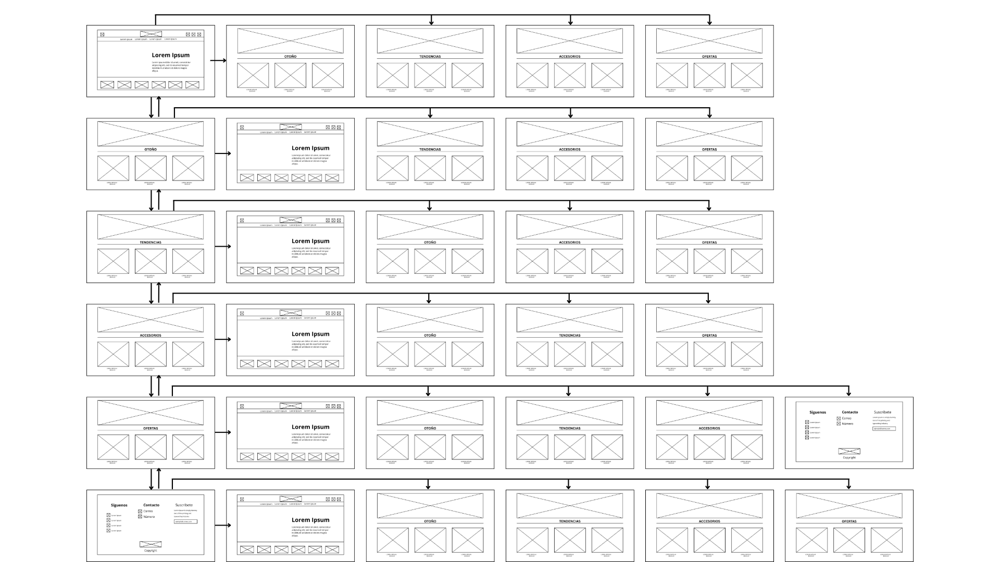
          </a><br>
          <span style="font-family: Helvetica; font-size: 14px;">Mapa</span>
        </td>
        <td align="center">
            
          </a><br>
          <span style="font-family: Helvetica; font-size: 14px;">Mockup</span>
        </td>
      </tr>
      <tr>
        <td align="center">
            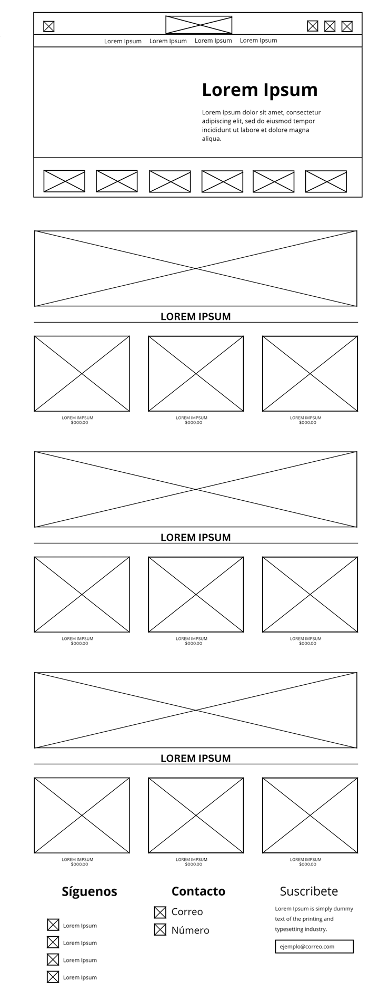
          </a><br>
          <span style="font-family: Helvetica; font-size: 14px;">Wireframes fidelidad baja</span>
        </td>
        <td align="center">
            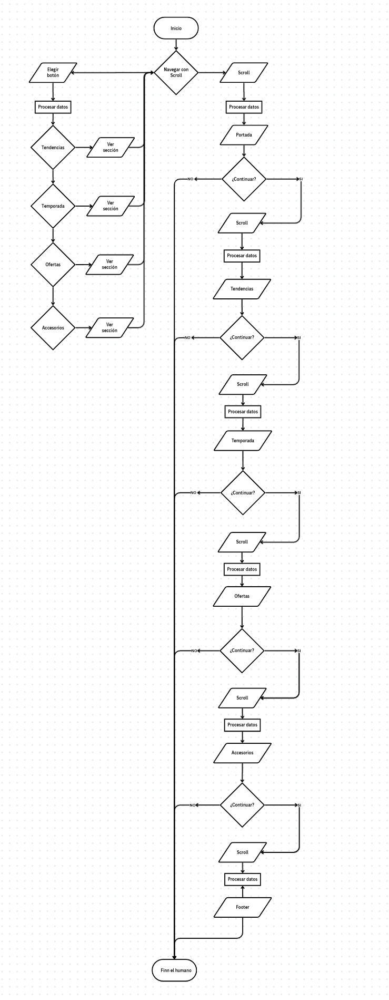
          </a><br>
          <span style="font-family: Helvetica; font-size: 14px;">Diagrama de flujo</span>
        </td>
        <td align="center">
            
          </a><br>
          <span style="font-family: Helvetica; font-size: 14px;">Wireframes filedidad alta</span>
        </td>
      </tr>

    </table>
  </center>

<footer 
style="background:rgb(13, 42, 65); 
color:rgb(223, 209, 173); 
padding:40px; 
font: size 22px;
font-family: Arial, Helvetica, sans-serif;
text-align:center; margin-top:20px;">
  CUADRO DE DATOS  Serch / Sergio David Borrego Peraza 217848
</footer>

</body>
</html>